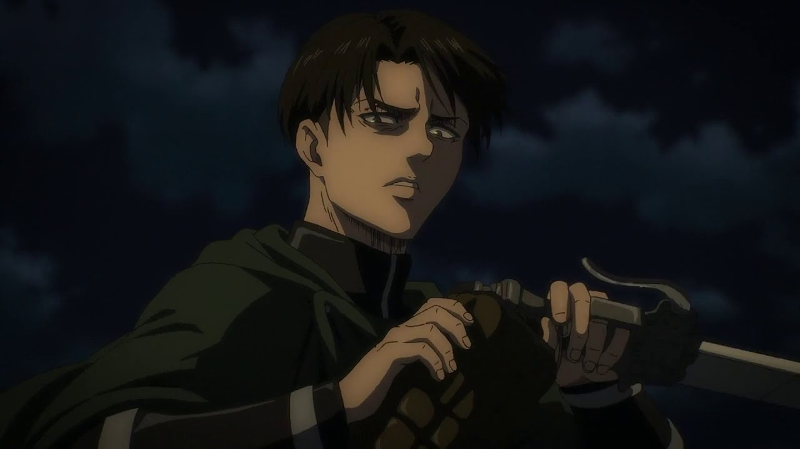
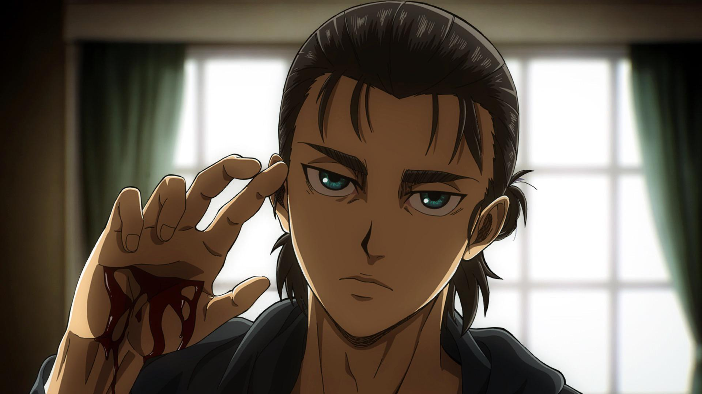

Favorite Characters

Levi Ackerman
Everyone who follows Levi respects him because he is the strongest soldier in the world and leads with unparalleled skill and tenacity.

Eren Yeager
The most compelling parts of the series are driven by Eren Yeager's development from an idealistic young man to a morally sophisticated leader.